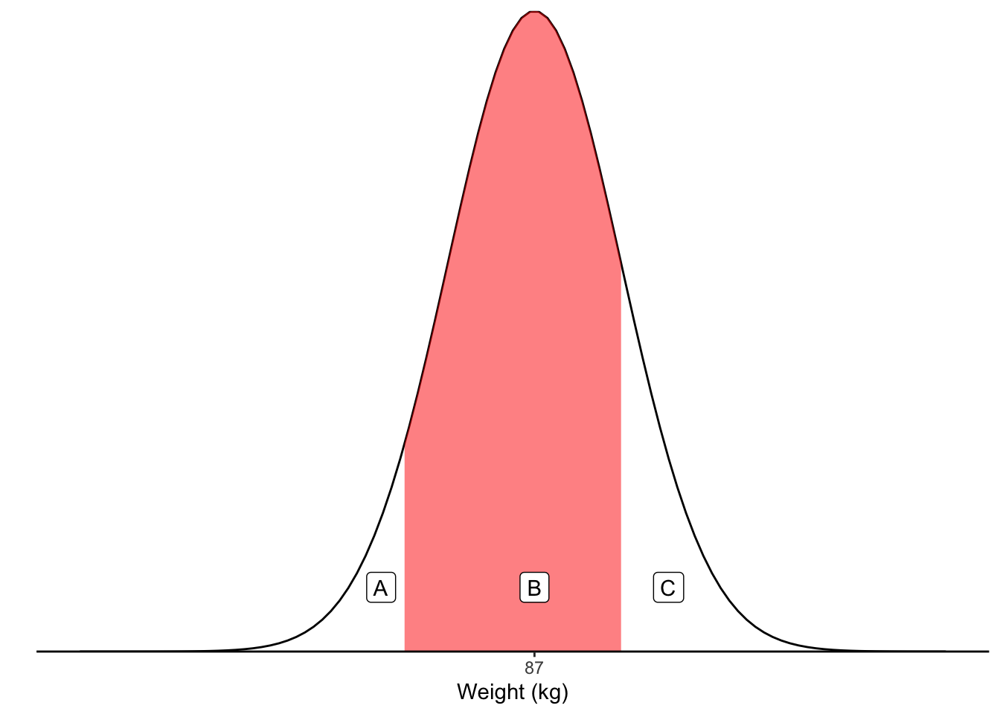
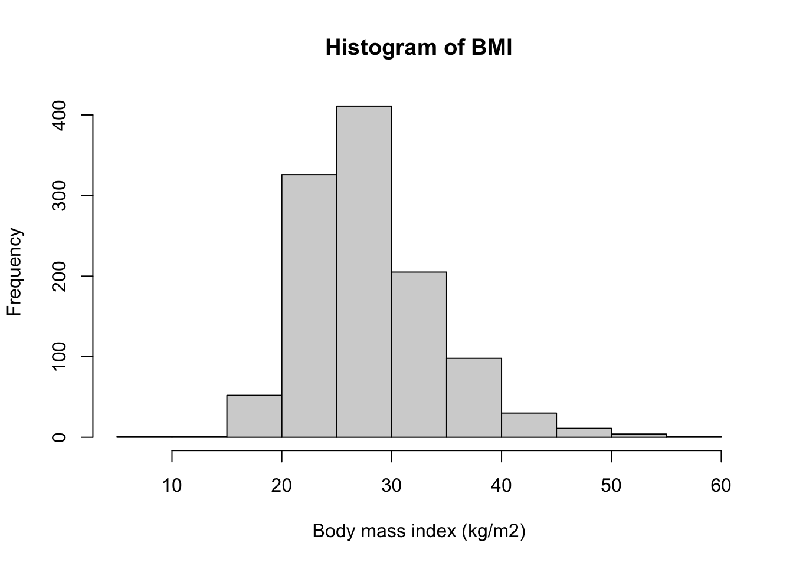
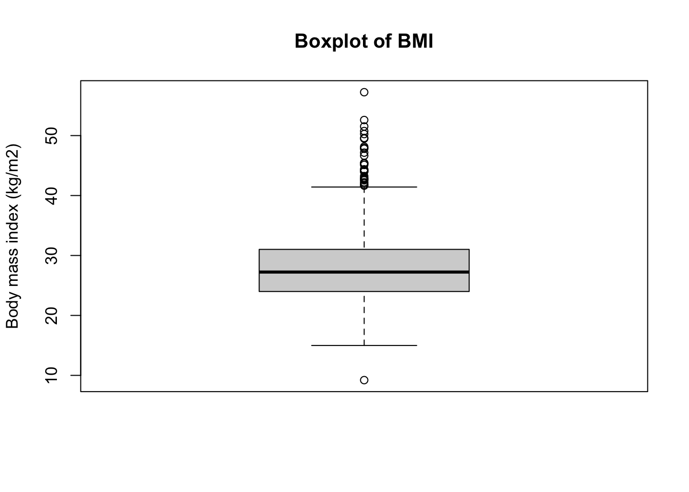
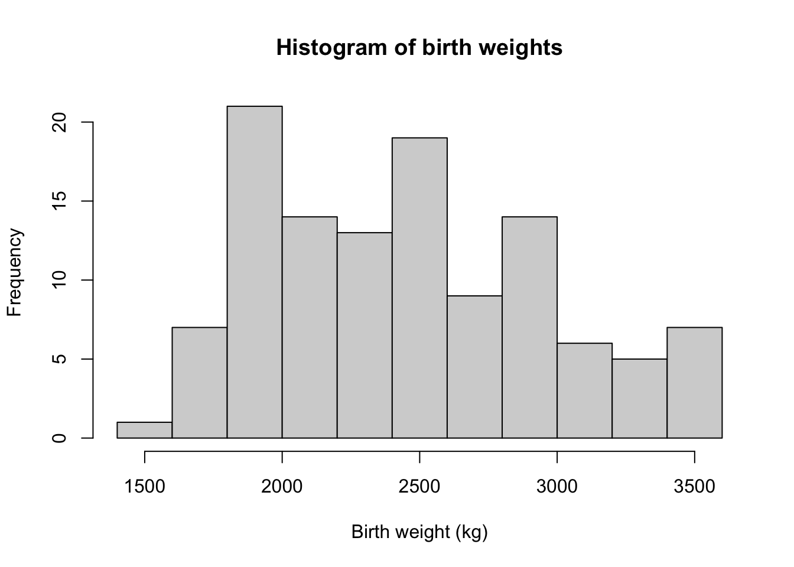
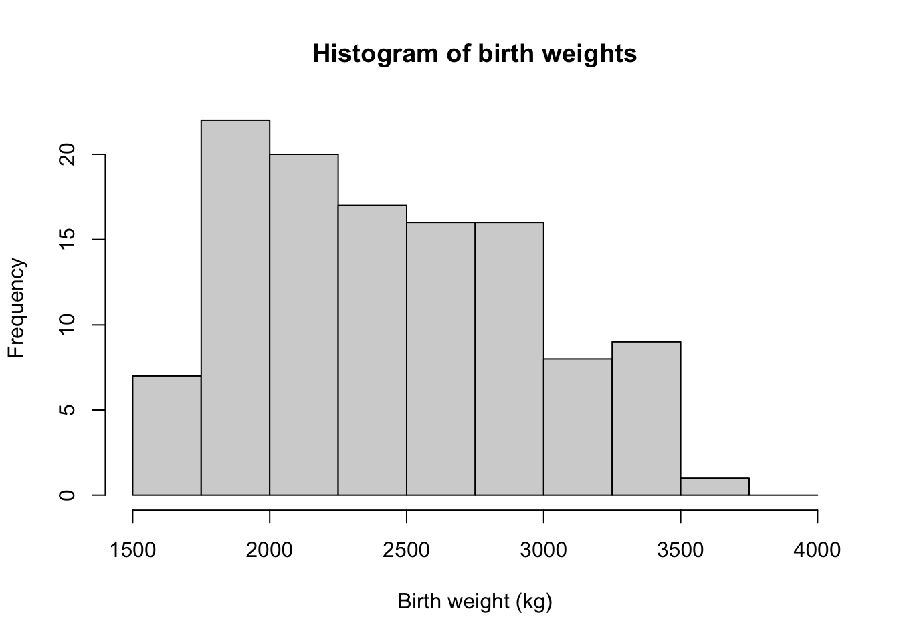
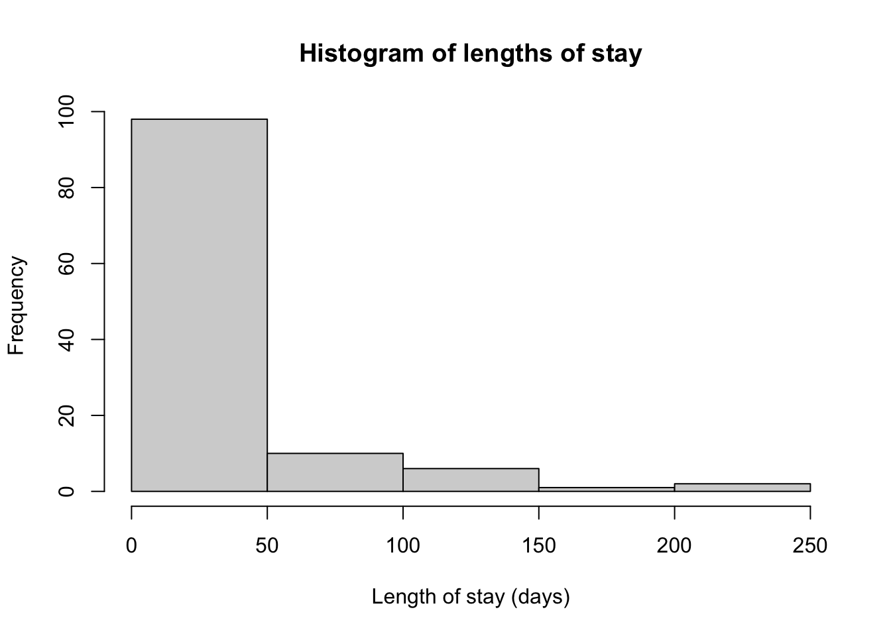
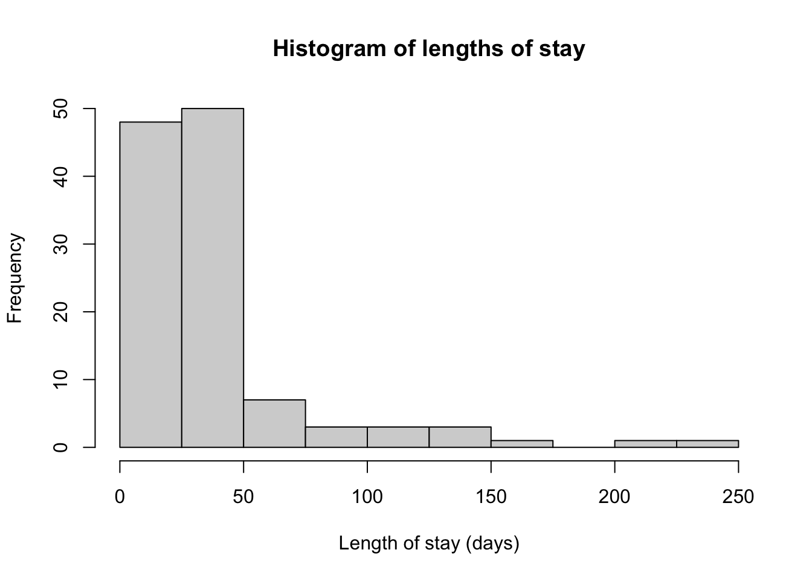
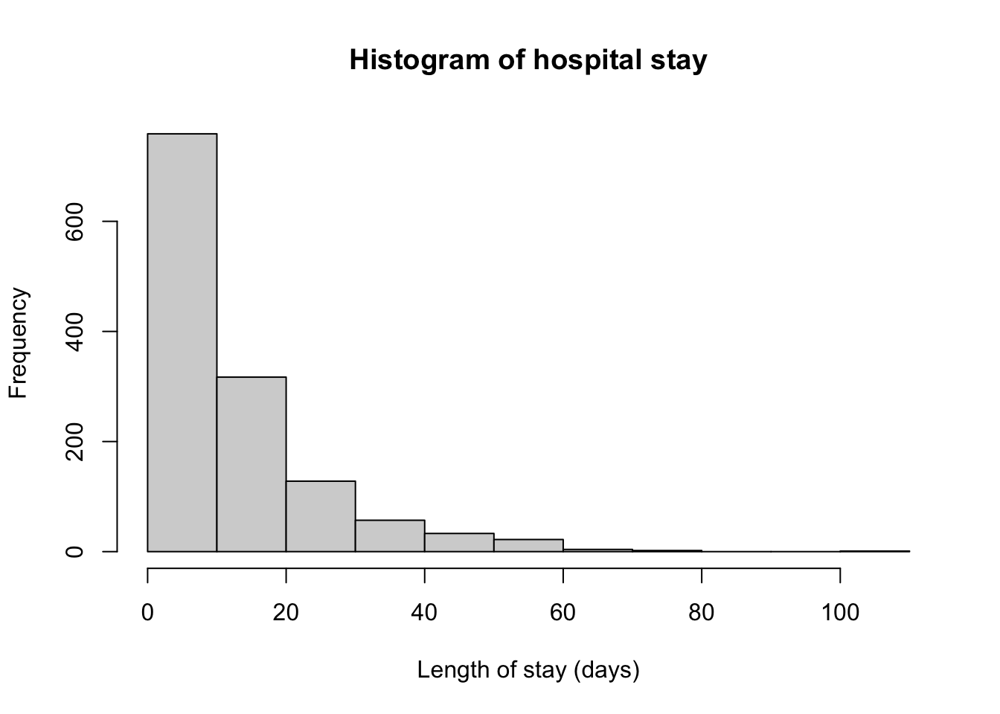
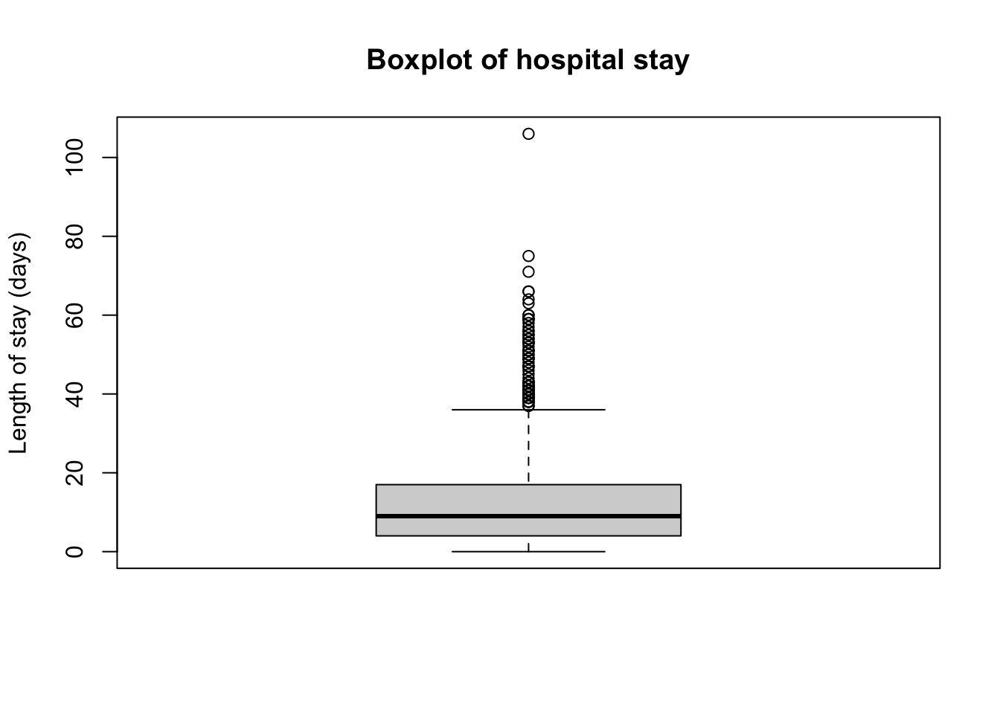
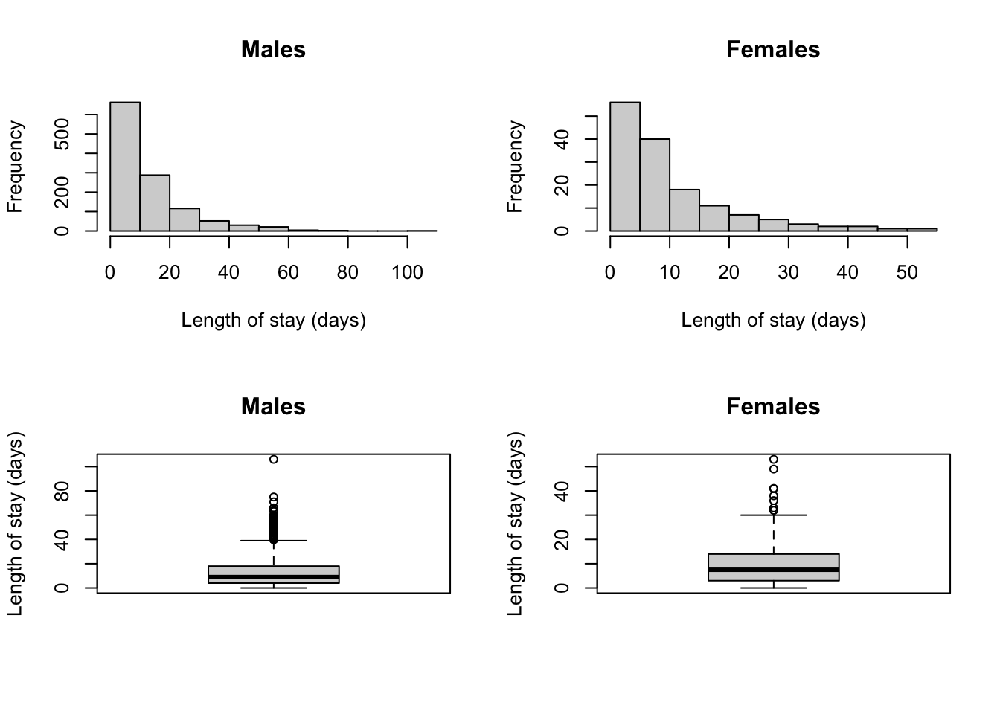

Module 2: Solutions to Learning Activities
Activity 2.1
In a Randomised Controlled Trial, the preference of a new drug was tested against an established drug by giving both drugs to each of 90 people. Assume that the two drugs are equally preferred, that is, the probability that a patient prefers either of the drugs is equal (50%). Use one of the binomial functions in R to compute the probability that 60 or more patients would prefer the new drug. In completing this question, determine:
- The number of trials (n)
Here, each participant represents a ‘trial’, so n is 90.
- The number of successes we are interested in (k)
We are interested in determining the probability that 60 or more participants prefer the new drug, so k is 60.
- The probability of success for each trial (p)
We are told to assume that the two drugs are equally preferred, so p is 0.5.
- The form of the R function: dbinom or pbinom
We need to calculate the probability that 60 or more participants prefer the new drug. The two R functions can be interpreted as follows: - the
dbinomfunction gives the probability of observing 60 successes; - thepbinomfunction gives the probability of observing 60 or fewer successes; - thepbinomfunction withlower.tail=FALSEgives the probability of observing more than 60 successes.
We therefore want to use
pbinomfunction withlower.tail=FALSEhere.
- The final probability.
To calculate the probability of obtaining 60 or more successes, we need to calculate the probabibility of observing more than 59 successes. So the function we use is:
pbinom(q=59, size=90, prob=0.5, lower.tail = FALSE)## [1] 0.001030133Therefore, the probability that 60 or more patients would prefer the new drug is 0.001 or 0.1%.
Activity 2.2
A case of Schistosomiasis is identified by the detection of schistosome ova in a faecal sample. In patients with a low level of infection, a field technique of faecal examination has a probability of 0.35 of detecting ova in any one faecal sample. If five samples are routinely examined for each patient, use R to compute the probability that a patient with a low level of infection:
- Will not be identified?
In all of these questions,
sizeis 5 andprobis 0.35. Here we need to calculate the probability of P(X=0), and we can use thedbinomfunction:
dbinom(x=0, size=5, prob=0.35)## [1] 0.1160291The probability P(X=0) = 0.116 or 11.6%.
- Will be identified in two of the samples?
The probability P(X=2)= 0. 336 or 33.6%:
dbinom(x=2, size=5, prob=0.35)## [1] 0.3364156- Will be identified in all the samples?
The probability P(X=5) = .005 or 0.5%:
dbinom(x=5, size=5, prob=0.35)## [1] 0.005252187- Will be identified in at most 3 of the samples?
“At most 3 samples” is the same as 3 or fewer samples, so we can use the pbinom function. The probability P(X≤3) = .946 or 94.6%:
pbinom(q=3, size=5, prob=0.35)## [1] 0.9459775Activity 2.3
If weights of men are Normally distributed with a population mean \(\mu\) = 87, and a population standard deviation, \(\sigma\) = 8 kg:
- What is the probability that a man will weigh 95 kg or more? Draw a Normal curve of the area represented by this probability in the population (i.e. with \(\mu\) = 87 kg and \(\sigma\) = 8 kg).
The curve representing the desired probability is drawn below, with the region above 95kg shaded to represent the probability of interest. Note that this curve was generated by a computer: a hand-drawn figure is completely acceptable. A hand-drawn figure will probably look much less tidy, but the main thing to notice is that the shaded area looks like it would represent less than 50% of the total curve. Therefore, our final probability should be less than 0.5.
Figure 1: Probability that a man will weigh 95kg or more
The probability is calculated as:
# Probability:
pnorm(95, mean=87, sd=8, lower.tail=FALSE)## [1] 0.1586553Therefore, the probability that a man from this population weighs 95 kg or more is 0.16 or 16%.
- What is the probability that a man will weigh more than 75 kg but less than 95 kg? Draw the area represented by this probability on a standardised Normal curve.
The curve to represent this probability is shown below. To obtain the probability represented by the shaded region, we again use the fact that the total area under a Normal curve must add to 1. Let’s break the curve into three parts, which we will call A, B and C.

We use that fact that A+B+C=1 to derive that B = 1– A – C. We have already calculated C in Part (a) of this question. To calculate A:
pnorm(75, mean=87, sd=8, lower.tail=TRUE)## [1] 0.0668072P(Weight < 75) = 0.0668.
The region B is calculated as: 1 - 0.1587 - 0.0668 = 0.7745.
So the probability that a man will weigh more than 75 kg but less than 95 kg is 0.77, or 77%.
Activity 2.4
Using the health survey data described in the R notes of this module, create a new variable, BMI, which is equal to a person’s weight (in kg) divided by their height (in metres) squared (i.e. \(\text{BMI} = \frac{\text{weight (kg)}}{\text{[height (m)]}^2}\). Categorise BMI using the WHO categories provided in the R notes. Create a two-way table to display the distribution of BMI categories by sex (sex: 1 = respondent identifies as male; 2 = respondent identifies as female). Does there appear to be a difference in categorised BMI between males and females?
library(readxl)
library(jmv)
survey <- read_excel("data/examples/health-survey.xlsx")
summary(survey)## sex height weight
## Min. :1.00 Min. :1.220 Min. : 22.70
## 1st Qu.:1.00 1st Qu.:1.630 1st Qu.: 68.00
## Median :2.00 Median :1.700 Median : 79.40
## Mean :1.55 Mean :1.698 Mean : 81.19
## 3rd Qu.:2.00 3rd Qu.:1.780 3rd Qu.: 90.70
## Max. :2.00 Max. :2.010 Max. :213.20After reading in the data, we define sex as a factor, and create BMI:
survey$sex <- factor(survey$sex, level=c(1,2), labels=c("Male", "Female"))
survey$bmi = survey$weight / (survey$height^2)After creating BMI, we should examine its distribution using a histogram and/or a boxplot:
hist(survey$bmi, main="Histogram of BMI", xlab="Body mass index (kg/m2)")
boxplot(survey$bmi, main="Boxplot of BMI", ylab="Body mass index (kg/m2)")
The boxplot in particular shows that there are some extreme values of BMI. We can examine these records by viewing records with BMI less than, say 15, or greater than 45:
subset(survey, bmi<15)## # A tibble: 2 × 4
## sex height weight bmi
## <fct> <dbl> <dbl> <dbl>
## 1 Female 1.57 22.7 9.21
## 2 Female 1.65 40.8 15.0subset(survey, bmi>45)## # A tibble: 16 × 4
## sex height weight bmi
## <fct> <dbl> <dbl> <dbl>
## 1 Female 1.52 105 45.4
## 2 Male 1.85 174. 50.8
## 3 Female 1.22 74.8 50.3
## 4 Male 1.93 213. 57.2
## 5 Female 1.63 127 47.8
## 6 Female 1.55 115. 48.0
## 7 Female 1.65 131. 48.2
## 8 Female 1.55 109. 45.3
## 9 Male 1.78 143. 45.1
## 10 Female 1.65 127 46.6
## 11 Female 1.63 132. 49.5
## 12 Female 1.7 152 52.6
## 13 Female 1.6 127 49.6
## 14 Female 1.5 106. 47.2
## 15 Female 1.73 154. 51.5
## 16 Female 1.6 116. 45.4The smallest BMI of 9.2 kg/m2 is very low, with a weight of 22.7 kg. We should check the recorded height and weight values against the original data (paper records, survey responses) if they were available. However, as a weight of 22.7kg is not impossible, this record will not be deleted. An alternative approach would be to analyse the data including the very low BMI and again excluding the very low BMI as a sensitivity analysis. The largest BMI values are based on participants with large weights, and none of these seem biologically implausible. Therefore, no changes will be made to participants with small or large values of BMI.
We can use the
cut()function to create the BMI categories. The WHO cutpoints are inclusive of the lower-bound, so we useright=FALSE. After creating the categories, it is good practice to check the resulting categories usingsummary():
survey$bmi_cat <- cut(survey$bmi, c(0, 18.5, 25, 30, 35, 40, 100), right=FALSE)
summary(survey$bmi_cat)## [0,18.5) [18.5,25) [25,30) [30,35) [35,40) [40,100)
## 18 362 411 201 101 47Finally, we can create a two-way table using the
contTables()function within thejmvpackage. We can define the rows by BMI category, and the columns by sex:
contTables(data=survey,
rows = bmi_cat,
cols = sex)##
## CONTINGENCY TABLES
##
## Contingency Tables
## ────────────────────────────────────────
## bmi_cat Male Female Total
## ────────────────────────────────────────
## [0,18.5) 6 12 18
## [18.5,25) 134 228 362
## [25,30) 216 195 411
## [30,35) 95 106 201
## [35,40) 46 55 101
## [40,100) 16 31 47
## Total 513 627 1140
## ────────────────────────────────────────
##
##
## χ² Tests
## ─────────────────────────────────────
## Value df p
## ─────────────────────────────────────
## χ² 22.49802 5 0.0004209
## N 1140
## ─────────────────────────────────────To assess whether there is a difference in BMI between males and females, we should look at the within-sex relative frequencies. In other words, column percents (for this table), by specifying
pcCol = TRUE:
contTables(data=survey,
rows = bmi_cat,
cols = sex,
pcCol = TRUE)##
## CONTINGENCY TABLES
##
## Contingency Tables
## ───────────────────────────────────────────────────────────────────────
## bmi_cat Male Female Total
## ───────────────────────────────────────────────────────────────────────
## [0,18.5) Observed 6 12 18
## % within column 1.16959 1.91388 1.57895
##
## [18.5,25) Observed 134 228 362
## % within column 26.12086 36.36364 31.75439
##
## [25,30) Observed 216 195 411
## % within column 42.10526 31.10048 36.05263
##
## [30,35) Observed 95 106 201
## % within column 18.51852 16.90590 17.63158
##
## [35,40) Observed 46 55 101
## % within column 8.96686 8.77193 8.85965
##
## [40,100) Observed 16 31 47
## % within column 3.11891 4.94418 4.12281
##
## Total Observed 513 627 1140
## % within column 100.00000 100.00000 100.00000
## ───────────────────────────────────────────────────────────────────────
##
##
## χ² Tests
## ─────────────────────────────────────
## Value df p
## ─────────────────────────────────────
## χ² 22.49802 5 0.0004209
## N 1140
## ─────────────────────────────────────From this health survey, it appears that men are more likely to have BMIs indicating Pre-Obesity (men 42% vs women 31%) and Obesity Class I (men 19% vs women 17%), compared to women who are more likely to have BMIs indicating Normal weight (women 36% vs men 26%).
Activity 2.5
The data in the file Activity_S2.5.rds (available on Moodle) has information about birth weight and length of stay collected from 117 babies admitted consecutively to a hospital for surgery. For each variable:
- Create a histogram to inspect the distribution of the variable;
babies <- readRDS("data/activities/Activity_S2.5-LengthOfStay.rds")
summary(babies)## ID Sex BirthWt GestAge LengthStay
## Min. : 25 female:55 Min. :1500 Min. :31.00 Min. : 0.00
## 1st Qu.: 54 male :62 1st Qu.:2012 1st Qu.:35.75 1st Qu.: 21.00
## Median : 83 Median :2438 Median :36.00 Median : 30.00
## Mean : 83 Mean :2451 Mean :36.56 Mean : 41.08
## 3rd Qu.:112 3rd Qu.:2830 3rd Qu.:38.00 3rd Qu.: 43.00
## Max. :141 Max. :3545 Max. :41.00 Max. :244.00
## NA's :1 NA's :5hist(babies$BirthWt, main="Histogram of birth weights",
xlab="Birth weight (kg)")
# We can specify our own cutpoints using the breaks command, with the seq() function:
hist(babies$BirthWt, main="Histogram of birth weights",
xlab="Birth weight (kg)",
breaks=seq(from=1500, to=4000, by=250))
hist(babies$LengthStay, main="Histogram of lengths of stay",
xlab="Length of stay (days)")
hist(babies$LengthStay, main="Histogram of lengths of stay",
xlab="Length of stay (days)",
breaks=seq(from=0, to=250, by=25))
The histogram for birthweight shows a roughly symmetric distribution. The histogram for length of stay shows a highly skewed distribution (skewed to the right).
- Complete the following summary statistics for each variable:
- mean and median;
- standard deviation and interquartile range;
- skewness and kurtosis.
descriptives(data = babies,
vars = c(BirthWt, LengthStay),
pc = TRUE,
skew = TRUE,
kurt = TRUE)##
## DESCRIPTIVES
##
## Descriptives
## ───────────────────────────────────────────────────
## BirthWt LengthStay
## ───────────────────────────────────────────────────
## N 116 117
## Missing 1 0
## Mean 2451.207 41.07692
## Median 2437.500 30.00000
## Standard deviation 504.8221 36.92984
## Minimum 1500.000 0.000000
## Maximum 3545.000 244.0000
## Skewness 0.3548827 3.090351
## Std. error skewness 0.2245612 0.2236233
## Kurtosis -0.7448547 11.56803
## Std. error kurtosis 0.4455276 0.4436951
## 25th percentile 2012.000 21.00000
## 50th percentile 2437.500 30.00000
## 75th percentile 2830.000 43.00000
## ───────────────────────────────────────────────────Make a decision about whether each variable is symmetric or not, and which measure of central tendency and variability should be reported.
As birthweight follows a roughly symmetric distribution, we should present the mean and standard deviation as the appropriate measures of central tendency and spread. Notice that the mean and median are similar, which is to be expected for a symmetric distribution.
Length of stay is highly skewed. In this case, the median and interquartile range are the appropriate measures to present. Notice that the mean is higher than the median, which is typical for distributions that are skewed to the right.
Activity 2.6
The data set of hospital stay data for 1323 hypothetical patients is available on Moodle in csv format (Activity2.6.csv). Import this dataset into R There are two variables in this dataset:
- female: female=1; male=0
- los: length of stay in days
- Use R to examine the distribution of length of stay: overall; and separately for females and males. Comment on the distributions.
hospstay <- read.csv("data/activities/Activity_S2.5.csv")
summary(hospstay)## female los
## Min. :0.0000 Min. : 0.00
## 1st Qu.:0.0000 1st Qu.: 4.00
## Median :0.0000 Median : 9.00
## Mean :0.1104 Mean : 12.52
## 3rd Qu.:0.0000 3rd Qu.: 17.00
## Max. :1.0000 Max. :106.00# Define female as a factor
hospstay$female <- factor(hospstay$female, levels=c(0,1), labels=c("Male", "Female"))
summary(hospstay$female)## Male Female
## 1177 146hist(hospstay$los, main="Histogram of hospital stay", xlab="Length of stay (days)")
boxplot(hospstay$los, main="Boxplot of hospital stay", ylab="Length of stay (days)")
hospstay_males <- subset(hospstay, female=="Male")
hospstay_females <- subset(hospstay, female=="Female")
# Set the graphics parameters to plot 2 rows and 2 columns:
par(mfrow=c(2,2))
# Specify each plot separately
hist(hospstay_males$los, xlab="Length of stay (days)", main="Males")
hist(hospstay_females$los, xlab="Length of stay (days)", main="Females")
boxplot(hospstay_males$los, ylab="Length of stay (days)", main="Males")
boxplot(hospstay_females$los, ylab="Length of stay (days)", main="Females")
# Reset graphics parameters
par(mfrow=c(1,1))The histograms for overall length of stay and length of stay by gender all show that length of stay is heavily skewed (skewed to the right).
- Use R to calculate measures of central tendency for hospital stay to obtain information about the average duration of hospital stay. Which summary statistics should you report and why? Report the appropriate statistics of the spread and measure of central tendency chosen.
descriptives(data = hospstay,
vars = los,
pc = TRUE,
skew = TRUE,
kurt = TRUE)##
## DESCRIPTIVES
##
## Descriptives
## ─────────────────────────────────────
## los
## ─────────────────────────────────────
## N 1323
## Missing 0
## Mean 12.51550
## Median 9
## Standard deviation 12.59933
## Minimum 0
## Maximum 106
## Skewness 1.947803
## Std. error skewness 0.06726732
## Kurtosis 5.166837
## Std. error kurtosis 0.1344336
## 25th percentile 4.000000
## 50th percentile 9.000000
## 75th percentile 17.00000
## ─────────────────────────────────────As the distribution of length of stay is highly skewed, the median and interquartile range should be presented. These can be calculated in the usual way, using the
descriptives()function. The median length of stay is 9 days, with an interquartile range of 4 to 17 days.
- Calculate the measures of central tendency for hospital duration separately for males and females. What can you conclude from comparing these measures for males and females?
descriptives(data = hospstay,
vars = los,
splitBy = female,
pc = TRUE,
skew = TRUE,
kurt = TRUE)##
## DESCRIPTIVES
##
## Descriptives
## ───────────────────────────────────────────────
## female los
## ───────────────────────────────────────────────
## N Male 1177
## Female 146
## Missing Male 0
## Female 0
## Mean Male 12.75531
## Female 10.58219
## Median Male 9
## Female 7.500000
## Standard deviation Male 12.83475
## Female 10.34625
## Minimum Male 0
## Female 0
## Maximum Male 106
## Female 53
## Skewness Male 1.943967
## Female 1.697009
## Std. error skewness Male 0.07130745
## Female 0.2006795
## Kurtosis Male 5.128450
## Female 3.067601
## Std. error kurtosis Male 0.1424946
## Female 0.3987670
## 25th percentile Male 4.000000
## Female 3.000000
## 50th percentile Male 9.000000
## Female 7.500000
## 75th percentile Male 18.00000
## Female 14.00000
## ───────────────────────────────────────────────Lengths of stay are similar for men (median: 9 days, interquartile range: 4 to 18 days) and women (median: 8 days, interquartile range: 3 to 14 days).